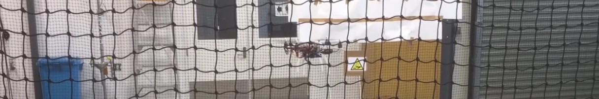
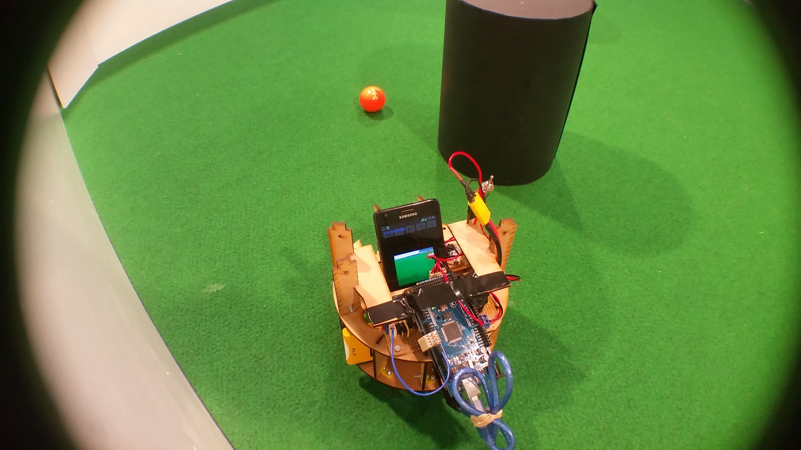
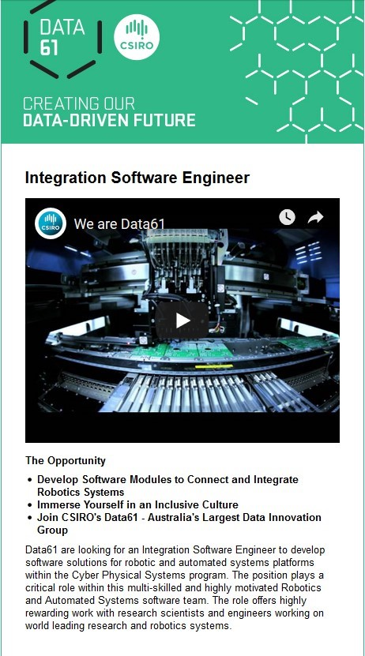
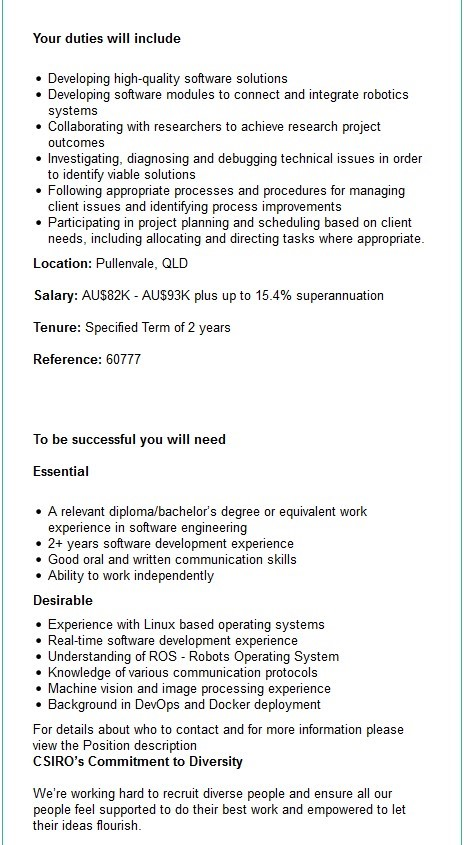
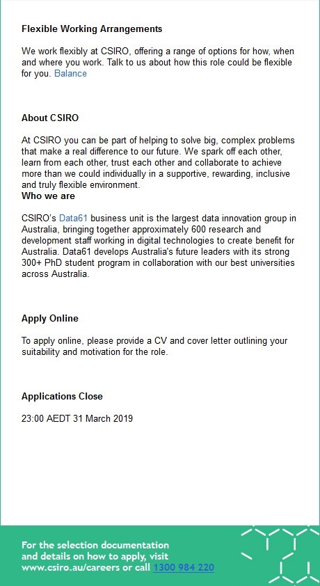
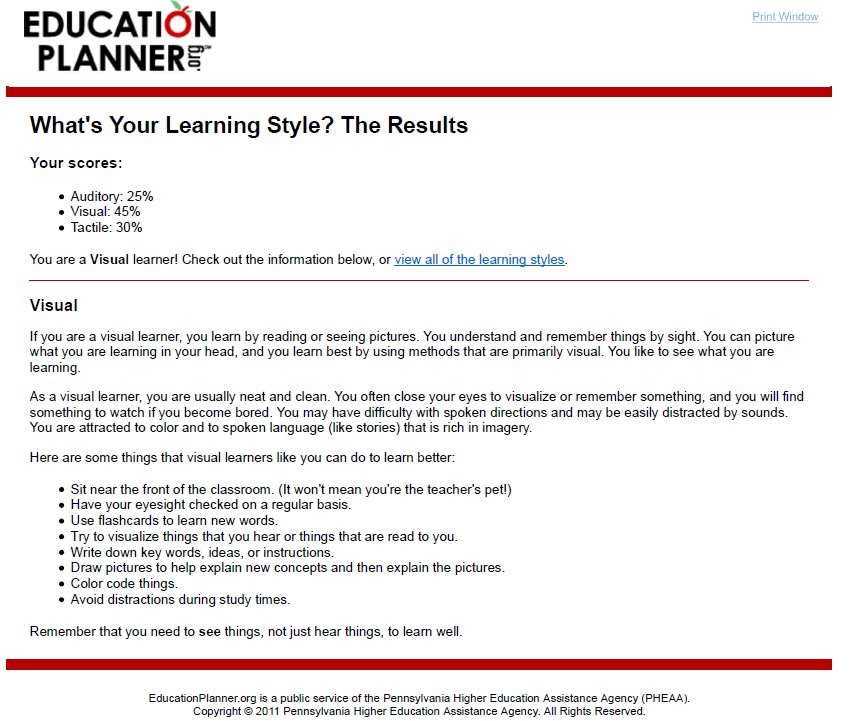
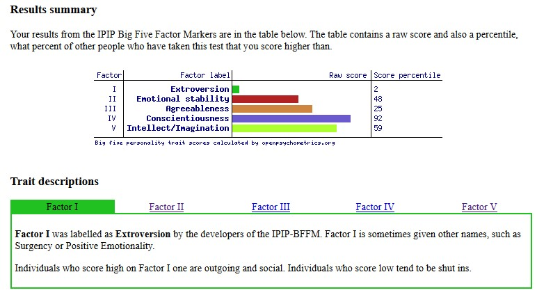
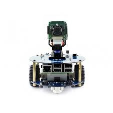

My Profile
| Name: | Sean Betts |
| Student Number: | s3794440 |
| Email: | s3794440@student.rmit.edu.au |
| GitHub: | https://github.com/sbett7 |
My name is Sean Betts, I was born and raised in Australia. Currently I only speak English as a language, but I am looking to learn other languages such as Japanese. I live in Queensland, where I graduated with a Bachelor of Engineering at the Queensland University of Technology, majoring in Computer and Software Systems, in 2018. As a hobby, I play tennis, and read online web novels.
My Interests in IT

I have had an interest in IT since my years in high school. In my final years of high school, I was looking into possible careers that I could move into and found a
description on the Mechatronics Engineering field. I found it interesting that it focused on combining different areas of electrical, mechanical and software engineering
to develop automated systems and robots. When I graduated from high school, I began studying Mechatronics Engineering for 3 years, before I decided to move to Software Engineering.
During that time I was involved in many robotic projects, such as building a robot that could play soccer.
I also worked for an IT support company for a year to complete my Work Integrate Learning requirement for the degree.
I have chosen to come to RMIT to help sharpen my skills in the IT industry. I am currently looking for work, after having completed my Bachelor of Engineering degree.
During this time, I wanted to try and maintain my current skill set, as well learn new skills. I felt that RMIT would provide me with the flexibility to study while looking for work
and eventually joining the IT industry.
Throughout the course of my studies, I expect to gain more experience in the skills that I have developed in my previous studies. However, I am also looking to learn new
skills such as web development, which I have not had much exposure to. I am also looking to learn more about networks and the security around them, as well as how to develop software for them.
Ideal Job
Below is a job listing from Seek.com for a position as a Integration Software Engineer at the CSIRO. The job posting can be found here.

This position is focused on the development and integration of software to support robotic platforms and automated systems. The role will involve working within a team to
develop software that help researchers to perform their tasks. The role will also include being involved in project planning to accurately develop towards the client's needs, as well as performing
and maintaining processes that have been set in place to support the client.
A Description of the Position

The skills that are required for this position require experience working with several different software packages and applications, as well as a relevant degree in the area of Software Engineering.
The software packages that the role requires experience in includes ROS , DevOps, and Docker. The position also requires experience in working with Linux-based operating systems.
This role also requires experience in developing image processing and robotic vision systems, and knowledge in communication protocols. The role also requires oral and communication skills,
as well as the ability to work independently.
A Description of the Qualifications and Skills Required

I have a Bachelor of Engineering, majoring in Computer and Software Systems, which should meet the qualification requirement for this role. As part of my role in an IT support company, I have had to communicate
with clients and other technicians on a regular basis, so I believe that I also have the communication skills for this role. Of the technical skills that they require, I have experience with developing machine
vision systens and image processing applications, as well as some understanding of the ROS software package and the development of real-time software. Throughout my studies, I have also gained a working understanding of the Linux operating
systems.
Currently I am lacking experience with the DevOps and Docker Software packages. I also feel that my experience with ROS and real-time software development is lacking, along with my knowledge of communication protocols.
In order to gain knowledge in these skills, I will take online courses, from places such as Udemy, in ROS, Docker, and DevOps. I will then try to incorporate these skills with D.I.Y projects to develop a working understanding of the
packages. I would also take some courses in image processing to improve my skills in this area. I will also move to use the Linux operating systems as my main OS, so that I have more experience in using it.
I will also be looking to perform research into communication protocols by taking courses and using different network packages and analysis tools such as WireShark to increase my knowledge in this area.Current Skills That Meet Requirements
Skills That Need To Be Developed
Personal Profile
Here are results from several personal and learning style tests, and what they think I mean about me.
Learning Style Results
Big-Five Personality Results
My Interpretation of the Results
The big five personality test and the Myers-Briggs test indicate that I am introverted and struggle with social interactions. They also indicate that I prefer hard facts over guesses and assumptions. They also indicate that I am responsible, and dependable when others need my help, but am less likely to get involved with others on a personal level. The two tests indicate that I like to plan and make early decisions and preparations, however my personality test indicates that I am able to try new things and focus on new problems. My learning style indicates that I predominantly learn through visual stimulus and by performing tasks related to the content. I struggle to learn from auditory input.
I believe that these results will influence my behaviour within the team right from the outset. I have noticed that in projects that I have been a part of, that I will take some time to warm up to the team before I begin to openly work with others and offer my ideas. I also believe that as I become more comfortable with my team, I will be more involved in helping them when they have issues with something they are working on. However, I would also argue about decisions on the project that have not been supported by facts. I also try to keep my team members at a distance, and maintain only a working relationship with them. With regards to my learning style, I think that I would struggle to understand the thoughts and ideas of a team member if they tried to explain something to me vocally, I believe it would take me less time to understand if they showed me or we performed the task that they were explaining.
With regards to forming a team, I believe I should choose a team of individuals that are similar in nature. I believe I would work better with individuals that had a desire to make decisions based on facts and not feelings. I believe it would be necessary to have an extroverted member within the team to help support in the initial stages, as it would take some time for those that are only introverted to become comfortable with each other. When forming the team, it would also be better to choose individuals that are work-oriented and dependable.
Project Idea: Alexa-Pi Robot
The project is focused on the development of a robot that is controlled using Amazon’s voice-assistant, Alexa. The aim of this project is to use the Amazon Alexa services to send voice commands to a robot to make it move around a room. This robot will consist of a Raspberry Pi to act as the communication relay and controller for the robot, and an Arduino Uno to control the motors of the robot. The user will then provide a voice command to the voice-assistant, which will be transmitted to and translated by the Raspberry Pi. The command is then sent to the Arduino Uno for it to be performed. A Raspberry Pi camera will also be attached to the robot, which will be used to forward a camera feed or take pictures and display them on an Amazon Echo device.
Motivation
The motivation for this project is to develop a unique mobile robot that can be driven using specific voice commands, as well as display visual data to the user. There are also additional levels of complexity, as this project involves network configuration to deploy the video sharing feature of the robot, as well as configuring a serial communication link between the Raspberry Pi and Arduino Uno. There have been projects that have focused on the development of robots that are controlled with Amazon’s Alexa services, and projects to use the Raspberry Pi camera as a security camera that can be displayed on Amazon’s Echo devices. However these two concepts have yet to be implemented together.
Description
The robot that will be developed will have several different features incorporated into its design. This robot will be interfaced with Amazon Alexa, to allow the user to command the robot with their voice. Using Amazon Alexa, the user will be able to provide simple commands which will cause the robot to rotate, or move. The user will also be able to request Alexa to display a live video or still image from the camera that will be built into the robot. For example, the user might use the following phrase:
Alexa, turn the robot 30° clockwise.
Alexa, show me the view from the robot.
The above commands would cause the robot to rotate 30° clockwise from its current position. The next command would access the onboard camera and transmit the live feed to the screen of the Echo device through a secure TLS connection (Machin, 2017). To be able to view the video stream from the robot, an Amazon Echo Show or Amazon Echo Spot will be required required. Other commands that can be given will include requesting the robot to move in a certain direction or taking a still image. The robot will be constructed with a light-weight chassis made of MDF board. The chassis will have two stories, to reduce the width and length of the robot. The Arduino and the motorised wheels that will be used to drive the robot will be placed on the bottom layer, while the Raspberry Pi and camera are placed on the top layer. The motors will be placed on either side of the chassis, with a caster while placed near the front of the robot to support and balance it. The Raspberry Pi camera will be placed on the front of the robot to capture everything that is in the robot’s field of view.
As stated previously, the robot will make use of a Raspberry Pi to act as the main processor. All commands from Alexa will be given and processed through the Raspberry Pi, which will be able to receive those commands using the Raspberry Pi's in-built WiFi module. The Raspberry Pi will also be connected to a camera which will be used to take photos or display a live feed directly to the user through an Amazon Echo display. To control the movement and direction of the robot, an Arduino Uno will be used for its ability to read and write analogue signals. This will make the movements of the robot more precise, as the Raspberry Pi does not have an Analogue converter built into it (DiCola, 2016).
A portable battery will be attached to the robot, which will be connected to the micro-USB power connection on the Raspberry Pi. This ensures that the robot will not be tethered to an electrical socket as it roams throughout the environment. The Raspberry Pi will be attached to the Arduino Uno via a USB-B cable which will supply power and a data connection to the Arduino Uno, this data connection will provide a two-way communication line for the two devices. Four AA batteries will also be attached to the robot to provide power to the two motors that will drive the robot. Additional transistor and diodes will be used to protect the motor from a negative voltage spike (Monk, 2018).
Tools and Technologies
The software that is required includes a copy of the NOOBS operating system for the Raspberry Pi, as well as a free developer’s license to the Amazon Services' developer portal. The development will be done using the Python SDK to develop the Alexa interface and the serial communication between the Raspberry Pi and the Arduino Uno. The Arduino IDE will be used to develop the software that will be used to control the motors of the robot.
Below is an expected list of materials that would be required to complete the project:
| Quantity | Item |
|---|---|
| 1 | Raspberry Pi 3 |
| 1 | Raspberry Pi 3 Case |
| 1 | Raspberry Pi Camera |
| 1 | Raspberry Pi Camera Case |
| 1 | 32GB microSD Card |
| 1 | Arduino Uno |
| 1 | MDF Board Chassis |
| 1 | 4x AA Battery Holder |
| 4 | AA Battery |
| 2 | PN2222 Transistor |
| 2 | 1N4001 Diode |
| 2 | 270Ω Resistor |
| 1 | Portable Power Bank |
| 1 | Amazon Echo Show / Amazon Echo Spot |
| 2 | Pololu Micro Metal DC Motor |
| 2 | Pololu Micro Metal DC Motor Holder |
| 2 | 40mm Pololu Wheel |
| 1 | Caster Wheel |
| 1 | USB-B Cable |
| 1 | Micro-USB Cable |
Skills Required
The skills that are required for this project involve some software expertise, as well as some electrical and mechanical expertise to connect and solder the connection of the motors and construct the chassis. The software skills that are required include experience in the Python programming language, as well as some expertise in the C programming language to develop software on the Raspberry Pi and the Arduino Uno. Experience using Amazon’s Developer console is also required to develop the voice user interface that will be used to invoke movement for the robot through the Amazon Echo device. Tutorials for the development of this software are readily available, however the electrical and mechanical work will require special tools, such as a soldering iron, as well as some ability in wood working to create the chassis.
Outcome
The outcome of this project will result in a robot that is capable of moving based on commands given to Amazon’s Alexa voice-assistant by the user. Additionally, with the attached camera, it will also allow users to view what the robot is seeing from an Amazon Echo device. As such it will provide a cheaper option than some other options such as the Lynx robot, or the Anki Cozmo Robot. If this project is successful, it will also provide the opportunity to expand further by adding additional features, such as object recognition and waypoint movement, which could be used to tell the robot to move to specific objects within its field of view.
Bibliography
- DICOLA, T. 2016. Raspberry Pi Analog to Digital Converters. Adafruit [Online]. Available from: https://learn.adafruit.com/raspberry-pi-analog-to-digital-converters/overview [Accessed 14/03/2019].
- MACHIN, S. 2017. Echo Show Security Camera with a Pi. SamMachin [Online]. Available from: http://sammachin.com/blog/build-your-own-rasp-pi-security-camera-for-the-echo-show/ [Accessed 14/03/2019].
- MONK, S. 2018. Arduino Lesson 13. DC Motors. adafruit learning systems [Online]. Available: https://cdn-learn.adafruit.com/downloads/pdf/adafruit-arduino-lesson-13-dc-motors.pdf [Accessed 14/03/2019].